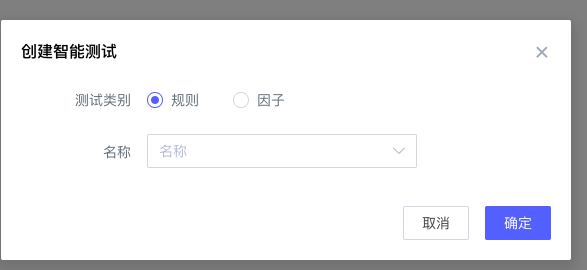
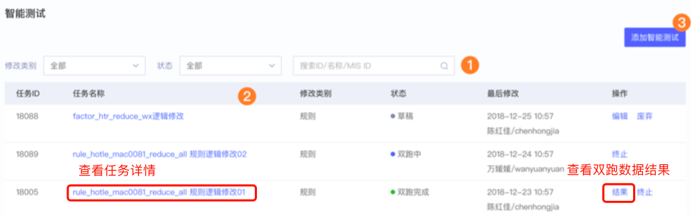
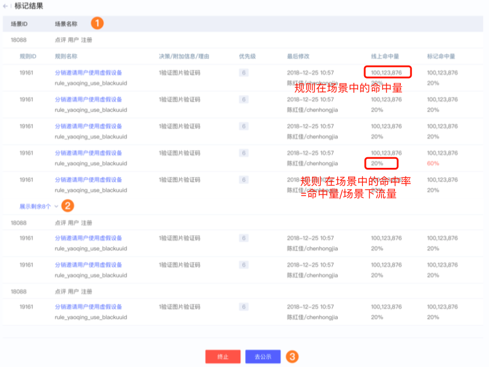
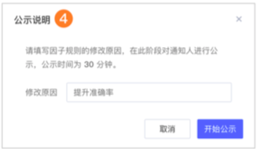
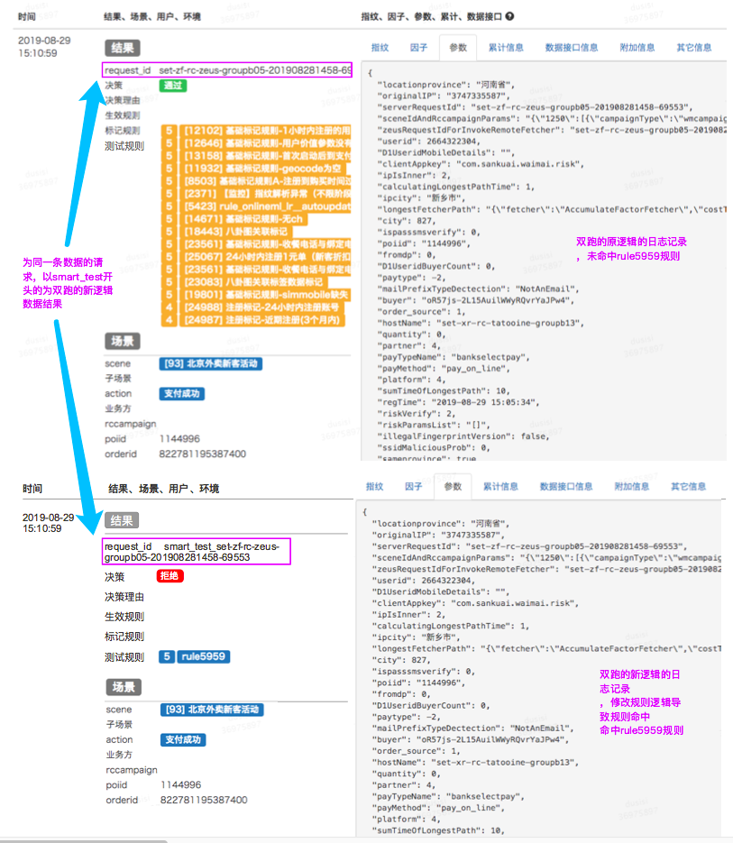

说明：智能测试使用指南
一、背景
解决：
（1）线上生效因子、规则修改流程中因避免误操作影响线上规则执行涉及的强制更新巨大工作量
（2）线上生效因子、规则被他方业务强制更新，使用方不知道问题
（3）强制更新操作冗长，简化操作，由6步骤精简为4步
新旧操作流程差异
|
新版本 |
旧版本 |
|
|---|---|---|
|
有强制更新权限 |
以修改因子（属性信息）为例： 1、修改因子属性信息-->2、修改完成 以修改因子（逻辑信息）为例： 1、修改因子逻辑信息-->2、设置标记时间提交智能测试-->3、验证双跑后对比数据是否复合预期-->4、验证无误后公示上线 |
支持随时修改规则，无论是否已经在场景中生效，弊端：规则未经过生产数据验证，容易因人工误操作造成case； |
|
无强制更新权限 |
以修改因子（逻辑信息+属性信息）为例： 1、查询因子所引用的规则M个-->2 、将规则在场景中生效修改为标记/离线*N次（M>N ）-->3 、修改因子逻辑-->4 、将引用因子的规则在场景中标记30分钟-->5、验证修改后引用因子标记数据是否复合预期-->6 、验证无误，将规则在场景中标记/离线修改生效*N次（M>N ） |
（4）化解业务咨询投诉率的23.5%；
二、名词解释
属性信息：规则备注、标签、共享业务方、客服备注（规则）、客服建议（规则）
逻辑信息：表达式、类型（因子）、英文名称（当前不可修改）
强制更新：若本次操作影响线上表达式的执行结果，需先将线上状态取消后再进行操作或者强行变更信息；
智能测试：规则、因子修改时按系统安全执行的双跑测试流程管理，即：当修改规则、因子、因子工具时，若影响线上策略的执行，将会进入智能测试流程，进行修改生效前的双跑。双跑期间，线上仍按照修改前的规则、因子逻辑执行；修改的逻辑为标记状态执行。
公示：规则、因子修改生效前的系统信息公示，为修改生效前的信息同步机制，默认30分钟，系统自动执行；
三、操作指南
3.1 智能测试全流程概述
Quick Start
3.2 智能测试详细操作流程
Step1：修改逻辑
-
入口a --Plus工具中心的智能测试

-
入口b -- 因子/规则的编辑页面
在因子列表中找到需要修改的因子，并点击因子进入编辑页面，进入编辑页面后，修改因子仍需要经过测试，并且至少有一条新增的成功的测试用例方可提交修改，之后启动智能测试任务
注意：
此时若有其他人正在编辑该因子/规则，您将收到提示xxmis号正在修改，需xx修改完成/退出编辑状态后，您方可修改。若您急于修改请大象联系该用户退出编辑状态。

Step2：设置标记时间提交智能测试
支持用户设置双跑标记时间，当前默认30分钟。点击“双跑标记”，将提示“后台已开始双跑标记，可在智能测试中查看”

同时也支持将未完成的智能测试任务中止，
注意
- 提交后，修改信息需要到智能测试页面中查看当前任务列表及任务状态；
- 双跑标记最长时间为30分钟，想要延长双跑标记时间可以么？本期不支持，若有需求后续二期增加。
- 修改需要紧急上线怎么办？--可选择紧急上线申请，可跳过双跑标记、公示期。
- 双跑中的智能测试任务不支持紧急上线，需要双跑完成后或双跑前提交紧急上线申请
Step3：验证双跑后对比数据是否复合预期
- 双跑结束后，将收到大象通知，“您的智能测试任务ID：XXX已双跑完成，请及时查看结果 查看数据结果”
-
可在智能测试列表页面中点击“结果”查看数据详情：规则在场景下标记30分钟的命中量统计，数据样例如下：

- 修改因子，在智能测试中会依据引用因子的规则在其场景配置同期命中量作为对比数据
- 每条规则详细数据查询：可在实时日志查询中查看，其中生效规则为原始逻辑，测试规则为修改后逻辑，支持按照用户/规则信息进行查询
- 若双跑的数据结果不符合预期或者已不需要修改，可将智能测试任务终止
Step4：验证无误后公示上线
- 确认修改逻辑无误，双跑数据结果符合预期，点击“去公示”
-
填写“公示说明”中的修改原因，该信息将会在公示时大象推送给修改该因子/规则影响到的业务方，业务方感知修改，默认无异议，若存疑会大象通知您，您将根据影响情况决策是否终止公示（即取消本次智能任务）

- 修改该因子/规则影响到的业务方收到大象通知样例
- 公示时间30分钟，完成后，系统将执行一键修改，完成智能测试任务，同时因子/规则修改生效（可能存在1分钟的延迟），同时将收到大象通知，“您的智能测试任务ID：XXX已公示完成修改成功，请及时查看结果 查看数据”（本期未支持，下版本增加）
3.3 特殊说明
-
累计因子修改说明
（1）修改读取条件：累计因子的数据无变化，直接进入双跑流程
（2）修改 累计事件、累计周期、累计类型（本期不支持）、按何累计、累计值、满足何种条件累计 的配置条件时，涉及到累计数据的写入逻辑修改，需对累计数据进行重构
例如：近5天同ip注册用户数
假设每天同ip注册用户数分布如下，Day6 对“满足何种条件累计”进行了修改，此时累计数据的写入条件发生变化，第六天的数据由2个变为6个。
当前版本实现的累计因子双跑，近5天同ip注册用户数，【线上生效】=3+4+2+5+2=16个；【双跑】=3+4+2+5+6=20个，【智能测试修改完成后】X个（生效时间点的旧逻辑数据）
|
Day1 |
Day2 |
Day3 |
Day4 |
Day5 |
Day6 |
|
|---|---|---|---|---|---|---|
|
同ip注册用户数 |
2个 |
3个 |
4个 |
2个 |
5个 |
2个-->6个 |
为什么这样做？
当前累计因子不支持回溯，因此若按照新逻辑重新执行，会导致数据断层，【双跑】=6，涉及累计类的规则命中量均会异常
同时后续累计因子支持回溯，该技术方案可无缝衔接；
为什么不支持累计类型的修改？
当前累计因子不支持回溯，修改累计类型，例如：由计数-->求和存在数据跃迁情况1+1+1+5+6，待累计因子支持回溯时即可支持累计类型修改
-
紧急生效
用户在编辑页面中逻辑修改并确认提交后，进行紧急上线申请，填写理由-->系统将相关申请信息通过大象公众号推送给引用方的业务负责人-->负责人审批通过-->修改执行完成

四、常见QA
Q：提交智能测试后，修改的信息在哪里能查询到？
--A：需要到智能测试页面中查看当前任务列表及任务状态；在修改成功前，因子/规则的修改信息均不会出现在因子/规则列表中；
Q：如何确定智能测试的数据符合预期？
--A：有两种方式（1）通过“双跑结果”数据中的线上命中量和命中率数据确认，修改前后命中数据波动是否符合预期
（2）通过智能测试任务执行期间的实时日志查看具体数据执行是否符合预期，可通过规则ID/userid等日志查询相关参数查询

Q：终止后的智能测试任务还可以再次重启么？
--A：不可以，只能重新创建任务，到达指定标记时间后将停止标记
Q：为什么要有公示？
--A：因子存在多业务方共用的情况，当一个业务方修改时会影响其他业务方，因子公示会将因子确认修改的信息和双跑结果以大象消息通知给其他业务方，若通知后30分钟内其他业务方无异议则成功；若有异议则需业务方大象同修改人沟通，终止修改；
Q：双跑标记最长时间为30分钟，想要延长双跑标记时间可以么？
--A：本期不支持，若有需求后续二期增加
Q：智能测试任务平均耗时情况？
--A：（1）使用紧急上线流程---依赖审批响应，最短1分钟；（2）不使用紧急上线流程--除去验证数据是否符合预期人工时间，最短60分钟；
Q：紧急上线流程审批人是谁？
--A：修改人所在业务方的负责人，即在【权限】-->【业务方管理】-->【负责人】
Q：支持累计类型的修改么？
不支持，因子当前累计因子不支持回溯，修改累计类型，例如：由计数-->求和存在数据跃迁情况1+1+1+5+6，待累计因子支持回溯时即可支持累计类型修改